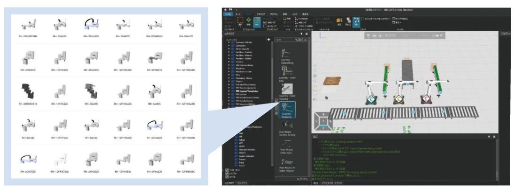
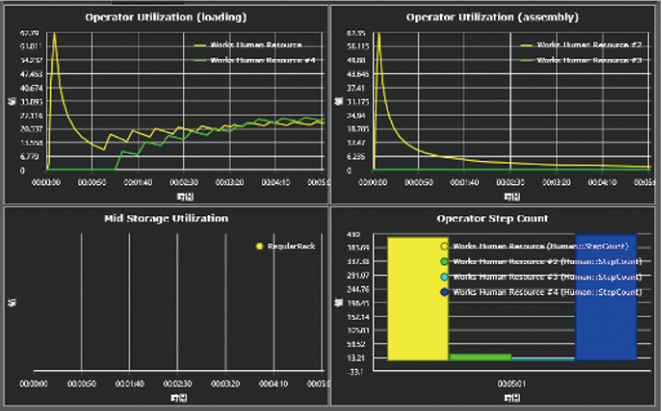

Peralatan Simulasi MELSOFT Gemini

Penggunaan Simulator 3D MELSOFT Gemini
Simulator 3D memiliki berbagai macam penggunaan yang berbeda.
Metode1
Desain produksi
Untuk membangun lini produksi dengan produktivitas tinggi
Verifikasi tata letak garis
Mampu memverifikasi dan memvisualisasikan produktivitas sebelum operasi sebenarnya
Mungkin untuk membangun jalur produksi dengan produktivitas tinggi!
Metode2
Desain mesin
Untuk mencegah pengerjaan ulang karena miskomunikasi antara desain mesin dan desain kontrol
Verifikasi spesifikasi mesin
Mampu membuat model untuk simulasi dari 3DCAD dan berbagi operasi mesin dalam bentuk animasi
Pengurangan waktu kerja yang signifikan untuk pengerjaan ulang dan efisiensi DR yang lebih baik!
3
Pra-penyesuaian/konfirmasi
Penyesuaian mesin di lokasi memerlukan waktu yang sangat lama dan waktu penyalaan tertunda secara signifikan
Verifikasi program kontrol
Dapat memverifikasi operasi mekanis di ruang digital terlebih dahulu menggunakan program kontrol
Periode penyesuaian di lokasi yang lebih singkat!
4
Layanan & pemeliharaan
Untuk memulihkan kerusakan peralatan dengan cepat
Verifikasi masalah
Dapat mereproduksi status jalur produksi dan mesin dari jarak jauh
Pemulihan lantai pabrik yang cepat dapat dilakukan!
5
Penjualan
Untuk menyampaikan nilai peralatan yang kami buat kepada pelanggan
Dukungan komunikasi
Mampu menunjukkan cara kerja produk dalam berbagai bentuk (3D, VR, animasi)
Saling pengertian yang lancar dan pembicaraan bisnis yang cepat!
6
Manajemen
Untuk meningkatkan laba atas investasi (ROI) saat memasang peralatan produksi baru atau melakukan perluasan
Dukungan untuk uji coba perhitungan biaya investasi untuk peralatan/pekerja
Dapat melakukan uji coba perhitungan biaya investasi yang diperlukan untuk peralatan dan pekerja berdasarkan hasil simulasi
Investasi yang optimal adalah mungkin!
Metode Pemanfaatan 1
Verifikasi tata letak baris
Membuat & memverifikasi tata letak dari eCatalog
Tata letak dapat dibuat dan diverifikasi hanya dengan menyeret dan meletakkan bagian yang diperlukan untuk verifikasi baris dari pustaka dan melakukan pengaturan yang mudah. Komponen yang dapat digunakan dalam eCatalog
Memvisualisasikan & analisis menggunakan fungsi grafik/statistik
Hasil simulasi dapat divisualisasikan dan dianalisis untuk mengidentifikasi hambatan dan perubahan rasio operasi.
Penyiapan dan verifikasi lini produksi dipermudah melalui pengaturan model
dari eCatalog yang melimpah dan memanfaatkan fungsi analisis statistik
Metode Pemanfaatan 2
Verifikasi Spesifikasi Mesin
Operasi dapat disiapkan dengan mengimpor data 3DCAD, menyiapkan mekanisme, lalu menggunakan skrip di MELSOFT Gemini. Hal ini memungkinkan pembuatan dan simulasi operasi mesin meskipun ladder dan pemrograman lainnya belum lengkap. Hal ini menyederhanakan tugas penyelarasan yang biasanya menggunakan gambar 2D dan diagram waktu.
"Pengurangan waktu kerja yang signifikan untuk pengerjaan ulang" dapat dilakukan
dengan berbagi operasi mesin dan mengurangi miskomunikasi antar desainer
Metode Pemanfaatan 3
Verifikasi program kontrol
Koneksi langsung ke berbagai simulator dan peralatan FA buatan Mitsubishi Electric meningkatkan akurasi pemeriksaan tabrakan mekanis. Melalui koneksi ke peralatan dan simulator perusahaan lain melalui Server OPC, verifikasi logika kontrol dapat dilakukan tanpa memandang peralatan atau mesin.
"Mengurangi waktu penyesuaian di lokasi" dengan meningkatkan
tingkat kelengkapan logika kontrol sebelumnya
Metode Pemanfaatan 4
Verifikasi masalah
Status pada saat kesalahan direproduksi sebagai model 3D berdasarkan data log.
Pemecahan masalah yang lebih cepat dapat dilakukan dengan menggabungkan tampilan monitor tangga, tampilan bentuk gelombang, dan tampilan data gambar.
Operasi peralatan dapat direproduksi di MELSOFT Gemini berdasarkan data log dan pemecahan masalah dapat dilakukan dari jarak jauh,
sehingga memungkinkan pemulihan lantai pabrik lebih awal
Metode Pemanfaatan 5
Dukungan Komunikasi
Saat mengusulkan mesin dan sistem yang dikembangkan secara internal kepada pelanggan, dengan menunjukkan kepada mereka cara kerja produk pada Simulator 3D, informasi dapat dibagikan tanpa kesalahpahaman.
"Pemahaman bersama yang lancar dan pembicaraan bisnis yang cepat" dapat
dimungkinkan dengan menunjukkan cara kerja produk dalam berbagai bentuk (3D, VR, animasi)
Metode Pemanfaatan 6
Dukungan untuk Perhitungan Uji Coba Biaya Investasi untuk Peralatan/Pekerja
Saat memasang peralatan produksi baru atau memperluas jalur yang ada, verifikasi melalui simulasi beberapa pola memungkinkan untuk memahami jumlah robot, mesin pemrosesan, dan AGV yang diperlukan, serta jumlah pekerja yang diperlukan, sehingga memungkinkan perhitungan uji coba biaya investasi yang optimal.
Investasi optimal dapat dilakukan! dengan melakukan percobaan menghitung biaya investasi yang dibutuhkan untuk
peralatan dan tenaga kerja berdasarkan hasil simulasi